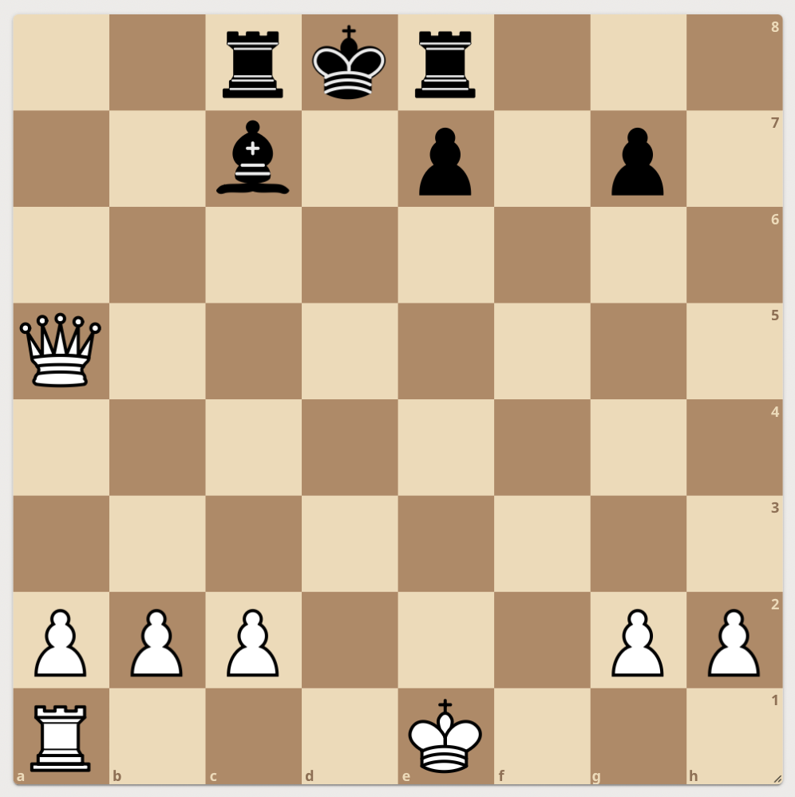

Bienvenue sur le site de M. Redon pour gérer ses classes de Mathématique. Vous trouverez ici le travail à faire pour les prochaines séances selon votre section ainsi que des liens et autres documents utiles.
contact: bruno.redon@ac-nantes.fr
Je vous propose un problème "échecs et Maths": il faut démontrer que dans la position ci-dessous (diagramme 1) où c'est aux blancs de jouer que le grand-roque n'est pas possible. Une petite aide: "d'où vient le Fou noir en ç7 ?
